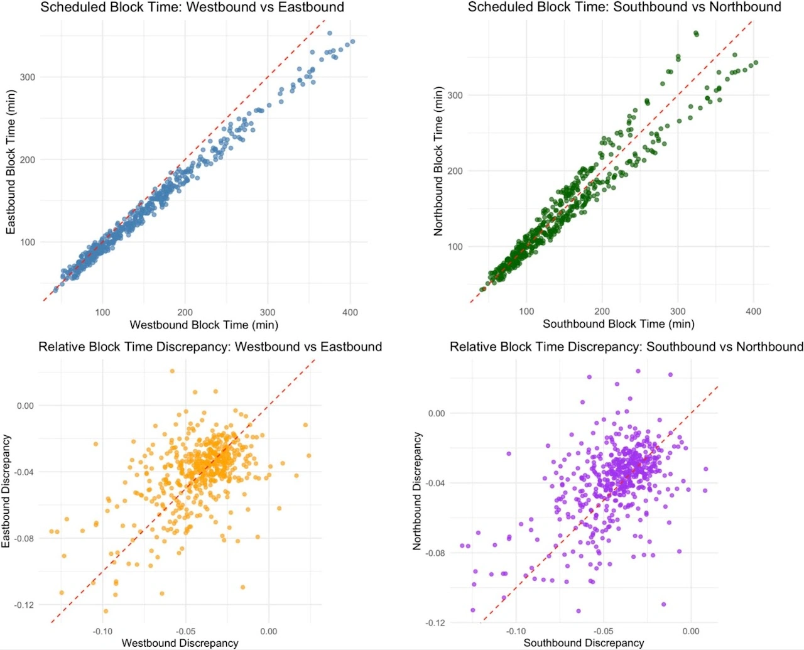
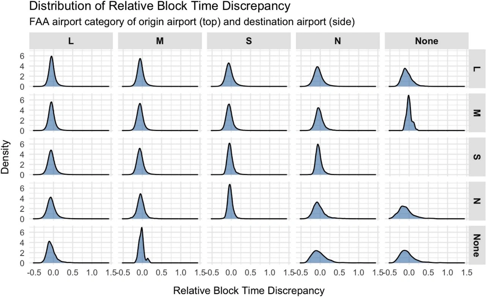
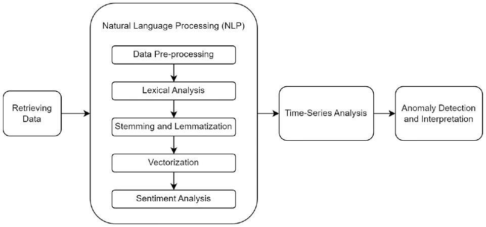
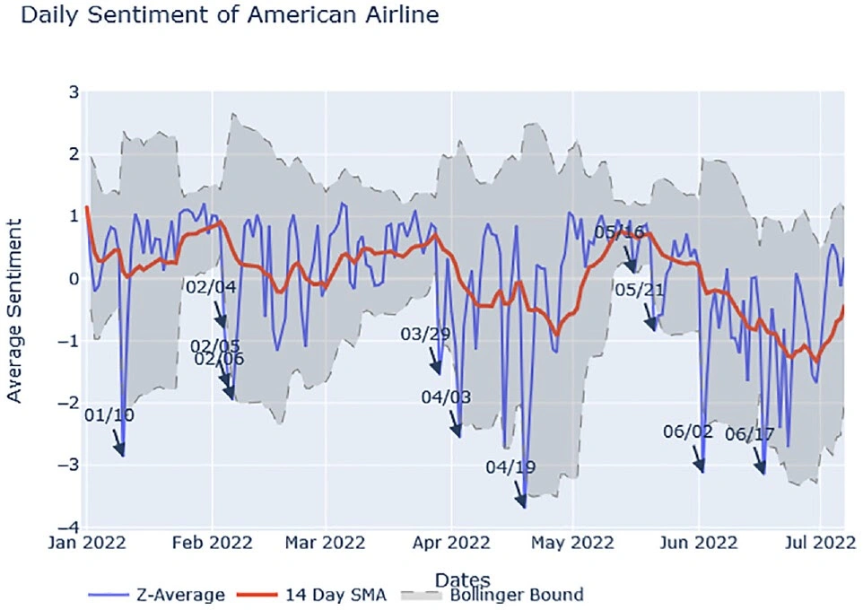
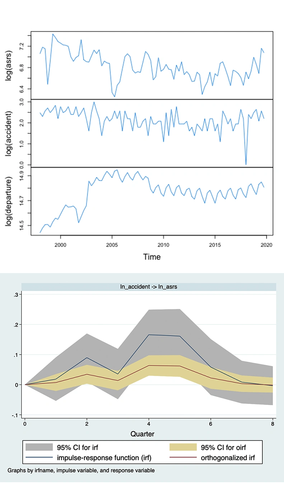
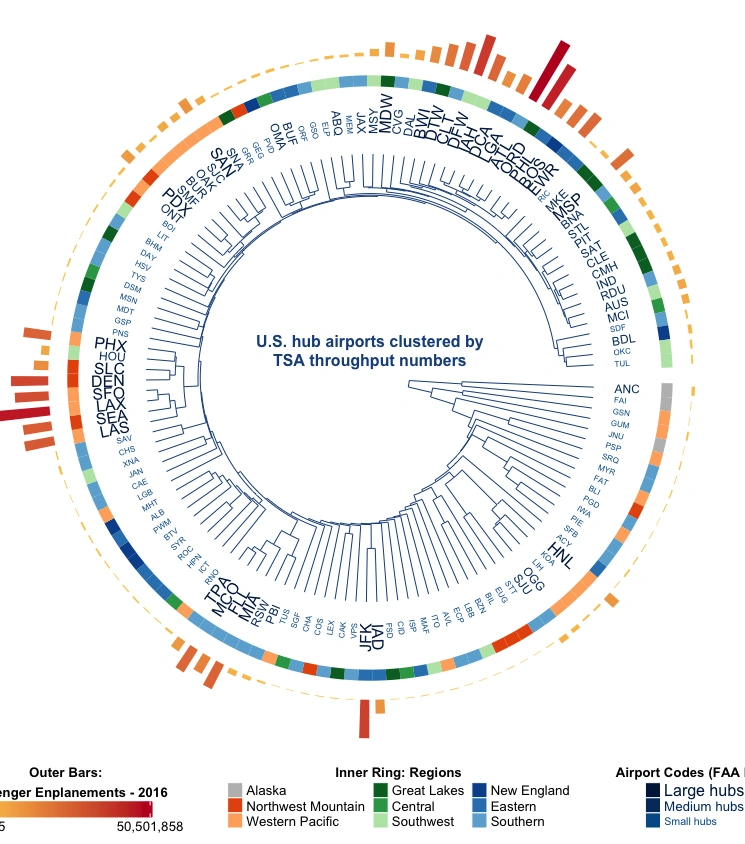
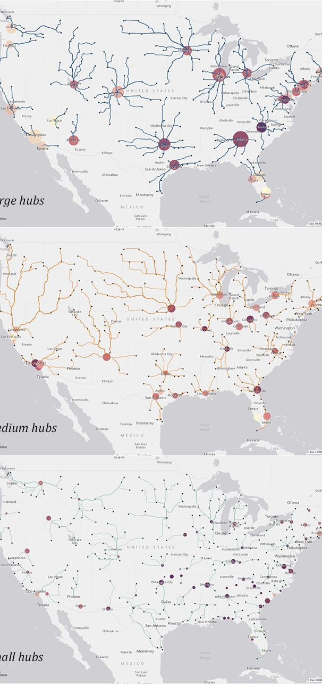
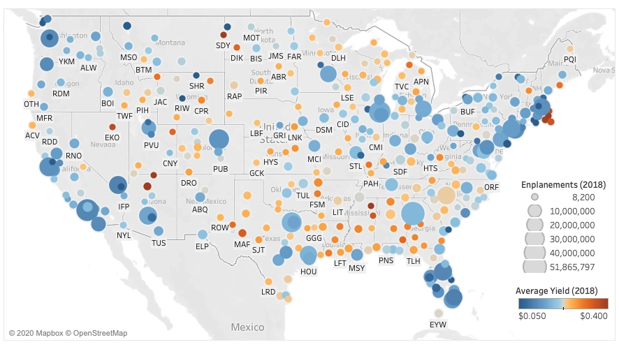
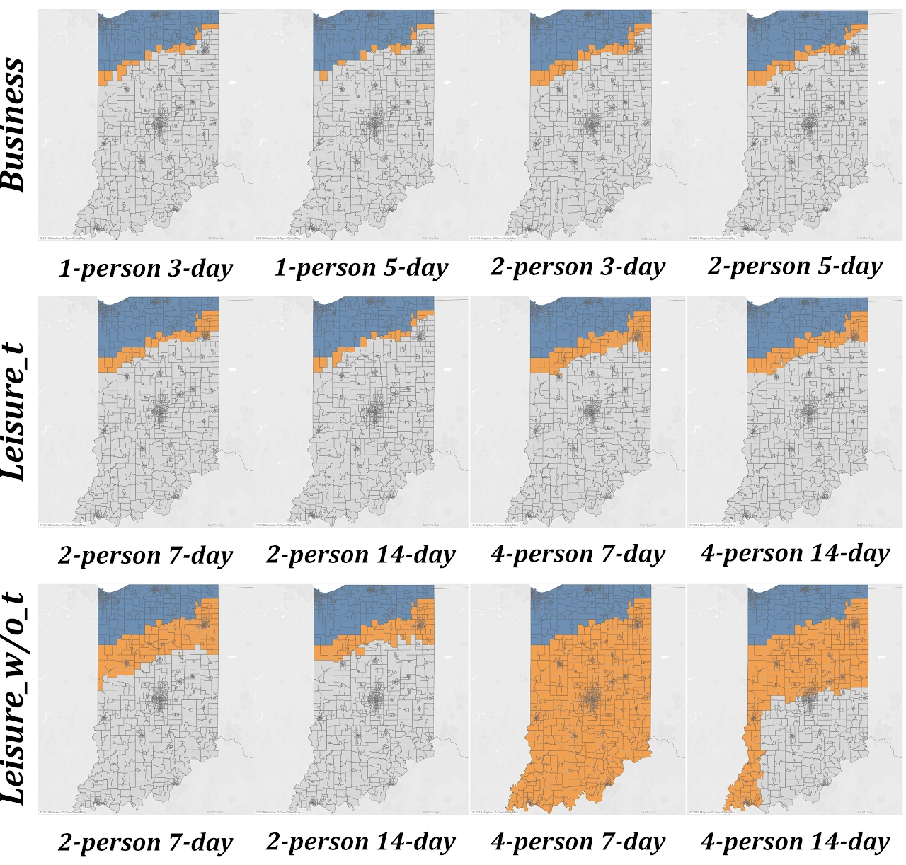

Factors associated with discrepancies between scheduled and actual flight block times: Evidence from U.S. domestic airline operations


Abstract
Scheduled block time (SBT) represents the planned gate-to-gate duration of a flight and serves as a key element of airline schedule planning. In practice, actual block times (ABTs) frequently differ from scheduled values due to operational and environmental conditions. This study investigates factors associated with relative block time discrepancy between ABT and SBT using a dataset of approximately 7.13 million U.S. domestic flights in 2024, integrating flight operations data with airport characteristics, aircraft information, origin-airport weather observations, and airport traffic measures. The analysis combines descriptive exploration with multiple empirical modeling approaches, including robust linear regression, LASSO regression, multivariate adaptive regression splines (MARS), generalized additive models (GAM), Random Forest, and XGBoost. Results reveal systematic patterns in block time discrepancies across time of day, airport categories, and aircraft types. Weather and airport traffic variables remain important correlates, with precipitation, wind speed, humidity, and visibility showing relatively consistent associations across model specifications, while the role of temperature is more sensitive to fixed-effect controls. Regional jet operations show greater sensitivity to weather conditions, while congestion-related factors play a stronger role in wide-body operations. A common time-blocked out-of-sample comparison shows that all fitted models outperform a simple historical operational benchmark, with tree-based machine-learning models providing the strongest predictive performance. However, the incremental gains over other fitted models are modest, and overall explanatory power remains limited. Overall, the findings provide large-scale empirical evidence on the operational conditions associated with discrepancies between scheduled and actual block times and offer diagnostic insights for schedule reliability, congestion management, and operational performance.
To cite this study
Gao, Y., Dou, Z., Wang, S., & Liu, J. (2026). Factors associated with discrepancies between scheduled and actual flight block times: Evidence from U.S. domestic airline operations. Transportation Research Part A: Policy and Practice, 213, 105227. https://doi.org/10.1016/j.tra.2026.105227
Machine Learning Approach to Analyze the Sentiment of Airline Passengers’ Tweets


Abstract
As one of the most extensive social networking services, Twitter has more than 300 million active users as of 2022. Among its many functions, Twitter is now one of the go-to platforms for consumers to share their opinions about products or experiences, including flight services provided by commercial airlines. Using a machine learning approach, this study aimed to measure customer satisfaction by analyzing sentiments of tweets that mention airlines. Relevant tweets were retrieved from Twitter’s application programming interface and processed through tokenization and vectorization. After that, these processed vectors were passed into a pretrained machine learning classifier to predict the sentiments. In addition to sentiment analysis, we also performed a lexical analysis on the collected tweets to model keyword frequencies, which provided meaningful context to facilitate interpretation of the sentiments. We then applied time series methods such as Bollinger Bands to detect abnormalities in the sentiment data. Using historical records from January to July 2022, our approach was proven capable of capturing sudden and significant changes in passenger sentiments through the analysis of breakout points on the Bollinger upper and lower bounds. The methodology devised for this study has the potential to be developed into an application that could help airlines, along with other customer-facing businesses, efficiently detect abrupt changes in customer sentiments and consequently take appropriate mitigatory measures.
To cite this study
Wu, S., & Gao, Y. (2023). Machine Learning Approach to Analyze the Sentiment of Airline Passengers’ Tweets. Transportation Research Record, 0(0). https://doi.org/10.1177/03611981231172948
The dynamics between voluntary safety reporting and commercial aviation accidents

Abstract
Since 1975, the Aviation Safety Reporting System (ASRS) has collected over 1.6 million reports from aviation community members and contributed to the efficiency and safety improvement of the National Airspace System (NAS) of the United States. Despite a large number of studies using ASRS data, the dynamics between safety reporting and aviation accidents remains unclear. Focusing specifically on the Part 121 air carriers of the U.S., this paper addresses the temporal relationship between voluntary safety reporting and the occurrence of commercial aviation accidents. Due to the uncertain and potentially mixed order of integration of the time-series data, this study uses Autoregressive Distributed Lag (ARDL) bounds testing and a special Vector Autoregressive (VAR) model based on Toda and Yamamoto (1995) for data analysis and cross-validation of the results. The ARDL bounds testing finds a long-run relationship from aviation accidents to safety reporting. This finding is confirmed by the estimation results of the VAR model that aviation accidents Granger cause voluntary safety reporting. Short-run relationships identified in ADRL bounds testing and impulse-response function (IRF) of the VAR model reveal that the response of safety reporting to aviation accidents peaks in the 4th and 5th quarter after the occurrence of accidents. Understanding the inter-temporal relationship between safety reporting and aviation accidents could facilitate the interpretation of reporting data for government agencies or safety departments of airlines overseeing safety reporting systems. The short-run and long-run relationships between voluntary safety reporting and aviation accidents identified in this study for U.S. air carriers could be used as benchmarks for other national aviation safety agencies or airlines to assess their safety reporting cultures.
To cite this study
Gao. Y., Hao, Y., Wang, S., & Wu, H. (2021). The dynamics between voluntary safety reporting and commercial aviation accidents. Safety Science, 141,105351, https://doi.org/10.1016/j.ssci.2021.105351
What is the busiest time at an airport? Clustering U.S. hub airports based on passenger movements

Abstract
Accurate clustering of airports enables airport authorities and operators to precisely position themselves in the competitive market, facilitates airlines to efficiently allocate resources, and empowers the research community with credible data for new discoveries. Existing clustering studies largely use traffic volume, network connectivity, or operational efficiency to group airports into hierarchical clusters or parallel partitions. Developing a different perspective, this study focuses upon a key bottleneck of outbound passenger movements in airport terminals, the security checkpoints, and uses the Transportation Security Administration (TSA) Customer Throughput/Wait Times Reports to cluster hub airports of the United States. With the input data structured as univariate time-series, -shape, a clustering algorithm that is robust to time axis distortion and computationally efficient, is selected to analyze the similarity of time-series using shape-based distance. The clustering results are validated by examining the raw and z-normalized data of selected airport clusters on six sampled dates. Analysis results indicate that -shape is competent and efficient to process and cluster time-series data used for this specific research. This study offers a fresh perspective to cluster commercial airports using an infrequently employed dataset. The clustering results reveal how the geographical location, hub status in airlines’ operational network, and destination type of an airport affect the movement of outbound passengers through terminals.
To cite this study
Gao, Y. (2021). What is the busiest time at an airport? Clustering U.S. hub airports based on passenger movements. Journal of Transport Geography, 90, 102931. https://doi.org/10.1016/j.jtrangeo.2020.102931
Spatial and operational factors behind passenger yield of U.S. nonhub primary airports

Abstract
Nonhub airports are an essential component in the National Plan of Integrated Airport Systems (NPIAS) of the United States in that they connect regional towns and small communities to the air transportation network. Understanding the interplay of operational and spatial factors in determining average passenger yield of nonhub airports provides airlines with valuable information for network planning and revenue management. This study examines factors contributing to the yield variation among nonhub airports in the U.S. Using ordinary least squares (OLS) based econometric models, this study captures the spatial dependence of passenger yield of nonhub airports, which tends to increase with a corresponding increase in distance to the nearest large hub airport. Nonhub airports surrounding large hub airports with higher passenger enplanements and higher average yields also have higher yields than other nonhub airports. In addition, this study finds the effect of Allegiant Airlines in lowering the average passenger yield of the nonhub airports served directly by the airline, which can be termed as ‘Allegiant Effect’. Findings of this study could provide valuable guidance for airlines to analyze network planning strategies and to identify future markets for growth and for policymakers when allocating resources to communities relying on these nonhub airports.
To cite this study
Gao, Y., Sobieralski, J. B. (2021). Spatial and operational factors behind passenger yield of U.S. nonhub primary airports. Journal of Air Transport Management, 90, 101967. https://doi.org/10.1016/j.jairtraman.2020.101967

Estimating the sensitivity of small airport catchments to competition from larger airports: A case study in Indiana

Abstract
An accurate estimation of airport catchment area enables airlines and airport operators to make informed decisions and to target potential markets precisely. This study uses the state of Indiana as a case study to estimate traffic leakage from the local airport, Indianapolis International Airport (IND), to two large hub airports in Illinois, the neighboring state of Indiana, namely Chicago O'Hare International Airport (ORD) and Chicago Midway International Airport (MDW). By using a decision making model that considers flying cost and access cost, this study simulates from local passengers' perspective which origin airport delivers the most cost effective flight itinerary. Using the top 20 routes of IND in 2018 as model inputs, the catchment area of two Chicago based airports in Indiana with variable coverage is plotted for different traveling scenarios. The analysis shows that an airport catchment area is sensitive to location, service level and traffic volume of competing airports nearby, as well as purpose of travel (business or leisure), number of travelers in a group (single, couple, family or multiple),length of trip, destination (domestic or international), preference of airlines (network carrier or budget carrier), and frequent flyer program status (premier member or general member). These findings could be valuable to all three aforementioned airports as well as airlines serving these airports when allocating operational and marketing resources. More importantly, this study creates a generic model that could be used by virtually any airport to estimate scenario-based catchment area using readily available itinerary and spatial data without resorting to expensive passenger surveys.
To cite this study
Gao, Y. (2020). Estimating the sensitivity of small airport catchments to competition from larger airports: A case study in Indiana. Journal of Transport Geography, 82, 102628. https://doi.org/10.1016/j.jtrangeo.2019.102628